SYDE572 Assignment 1
This can be found at: https://e3kang.github.io.
AI Usage: I used AI to format this website, including setting the fonts, headings, positions and displays of plots, equations, and code. However, all math functions (Newton-Raphson, Golden Section, NR Multivariate) were coded by hand, and all equations and steps were worked out by hand. AI was then used to place the results onto the website.
Question 1
Solve using the analytical approach and two numerical approaches (Newton-Raphson, Golden Section Search) the shortest distance from y = x² + 5 to the points (0,0), (−4,0), (−8,0), (2,0), (6,0).
For Newton-Raphson: I implemented the function from class notes, and added a path array that records (x, y) of each iteration. The plot function plots all these points (may be hard to see due to how close together they are) as well as the closest point it converged on. Each initial guess starts at x=0.
For Golden Section: I implemented the function from class notes, and the path array records the bounds [a, b] of each iteration. The plot function shows the bounds shrinking over each iteration (indicated by darker shades), as well as the closest point. The initial boundary is [-10, 10] (not fully included in the visual).
Point 1: (0, 0)
Analytical Approach (Calculus)
$x_0 = 0$, $y_0 = 0$, $f(x) = x^2 + 5$, $f'(x) = 2x$
Sub in variables:
$$0 = (x - 0) + \bigl(f(x) - 0\bigr) \cdot f'(x)$$ $$0 = x + f(x) \cdot f'(x)$$Sub in $f(x)$:
$$0 = x + (x^2 + 5)\,2x$$ $$0 = 11x + 2x^3$$ $$0 = x\,(2x^2 + 11)$$Only real solution is $x = 0$. $f(0) = 5$. Point is $(0, 5)$.
$$\text{distance} = d = \sqrt{(0-0)^2 + (5-0)^2} = \boxed{5}$$Newton-Raphson Method
Iterations: 1. Answer: (0, 5). Distance: 5
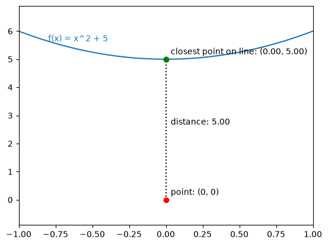
Golden Section Search
Iterations: 41. Final bound: [-1.6692e-08, 7.0710e-08]
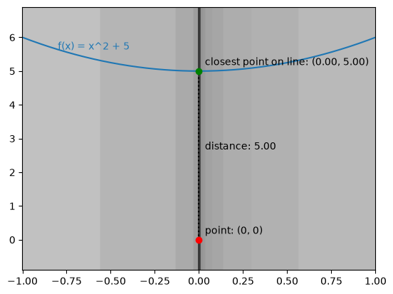
Point 2: (−4, 0)
Analytical Approach (Calculus)
$x_0 = -4$, $y_0 = 0$
Sub in variables:
$$0 = \bigl(x - (-4)\bigr) + \bigl(f(x) - 0\bigr) f'(x)$$ $$0 = x + 4 + f(x) \cdot f'(x)$$Sub in $f(x)$ and $f'(x)$:
$$0 = x + 4 + (x^2 + 5)\,2x$$ $$2x^3 + 11x + 4 = 0$$Real solution: $x = -0.35547$, $f(-0.35547) = 5.1264$. Point is $(-0.35547,\ 5.1264)$.
$$\text{distance} = D = \sqrt{\bigl(-0.35547 - (-4)\bigr)^2 + (5.1264 - 0)^2} = \boxed{6.28988}$$Newton-Raphson Method
Iterations: 4. Final number: -0.35546969287483454
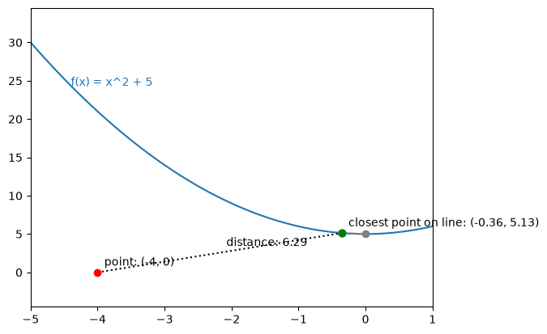
Golden Section Search
Iterations: 40. Final bound: [-0.3554697266637665, -0.35546963926115976]
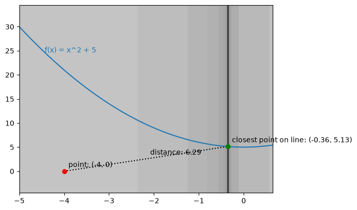
Point 3: (−8, 0)
Analytical Approach (Calculus)
$x_0 = -8$, $y_0 = 0$
Sub in variables:
$$0 = \bigl(x - (-8)\bigr) + \bigl(f(x) - 0\bigr) \cdot f'(x)$$ $$0 = x + 8 + f(x) \cdot f'(x)$$Sub in $f(x)$ and $f'(x)$:
$$0 = x + 8 + (x^2 + 5)\,2x$$ $$2x^3 + 11x + 8 = 0$$Real solution: $x = -0.67208$, $f(-0.67208) = 5.4517$. Point is $(-0.67208,\ 5.4517)$.
$$\text{distance} = D = \sqrt{\bigl(-0.67208 - (-8)\bigr)^2 + (5.4517 - 0)^2} = \boxed{9.1334}$$Newton-Raphson Method
Iterations: 5. Final number: -0.6720781267789521
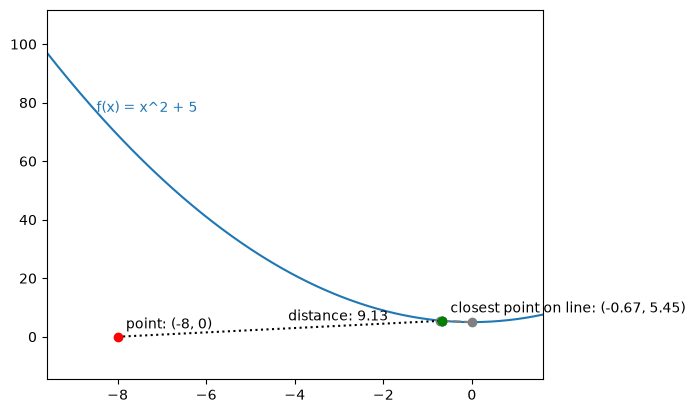
Golden Section Search
Iterations: 40. Final bound: [-0.6720781633833134, -0.6720780759807067]
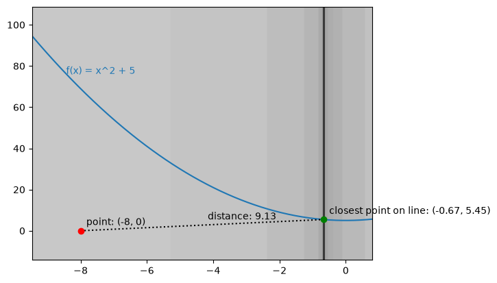
Point 4: (2, 0)
Analytical Approach (Calculus)
$x_0 = 2$, $y_0 = 0$
Sub in variables:
$$0 = (x - 2) + \bigl(f(x) - 0\bigr) \cdot f'(x)$$ $$0 = x - 2 + f(x) \cdot f'(x)$$Sub in $f(x)$ and $f'(x)$:
$$0 = x - 2 + (x^2 + 5)\,2x$$ $$2x^3 + 11x - 2 = 0$$Real solution: $x = 0.18074$, $f(0.18074) = 5.0327$. Point is $(0.18074,\ 5.0327)$.
$$\text{distance} = D = \sqrt{(0.18074 - 2)^2 + (5.0327 - 0)^2} = \boxed{5.3514}$$Newton-Raphson Method
Iterations: 4. Final number: 0.1807446044793497
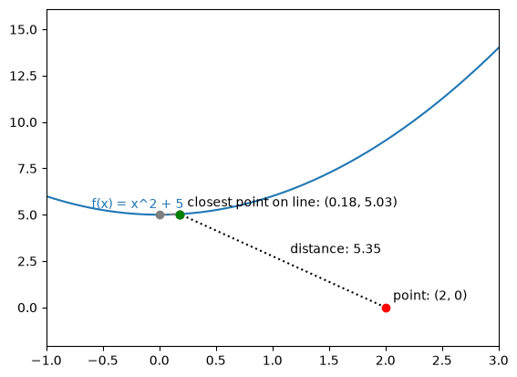
Golden Section Search
Iterations: 40. Final number: [0.1807445832783509, 0.18074467068095768]
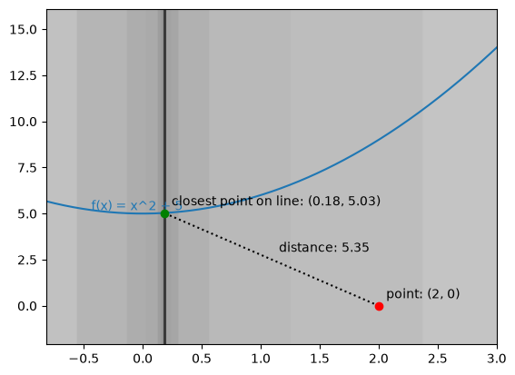
Point 5: (6, 0)
Analytical Approach (Calculus)
$x_0 = 6$, $y_0 = 0$
Sub in variables:
$$0 = (x - 6) + \bigl(f(x) - 0\bigr) \cdot f'(x)$$ $$0 = x - 6 + f(x) \cdot f'(x)$$Sub in $f(x)$ and $f'(x)$:
$$0 = x - 6 + (x^2 + 5)\,2x$$ $$2x^3 + 11x - 6 = 0$$Real solution: $x = 0.51990$, $f(0.51990) = 5.2703$. Point is $(0.51990,\ 5.2703)$.
$$\text{distance} = D = \sqrt{(0.51990 - 6)^2 + (5.2703 - 0)^2} = \boxed{7.6031}$$Newton-Raphson Method
Iterations: 4. Final number: 0.5199036610347048
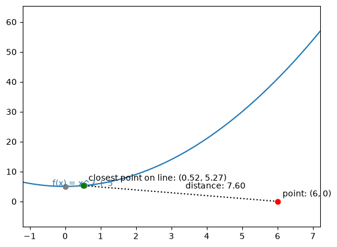
Golden Section Search
Iterations: 40. Final number: [0.5199036328329342, 0.519903720235541]
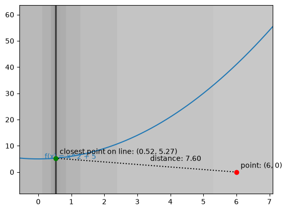
Question 2
If we have the following set of points, we want to fit a parabola and a line to these points by minimizing the min squared error of the fitted function. Set up the MSE function. You will have at least 2 parameters to optimize for, the slope and intercept and similarly for the parabola. Using an analytical method and a numerical method (Newton-Raphson multivariate), firstly optimize for one parameter assuming a particular value for the other parameter and then optimize for the 2nd parameter in each iteration step. What is the MSE you get for the line and for the parabola? Show the worked out solution by hand and also supply python code (your own code) to automate the procedure. Produce plots of intermediate steps.
Points: $(0,\ 0.5)$, $(1,\ 1.5)$, $(2,\ 3.5)$, $(3,\ 7.5)$
Analytical Method
Line
$y = mx + b$
MSE function:
$$\frac{1}{4} \sum \bigl[(mx_i + b) - y_i\bigr]^2$$Partial with respect to $m$:
$$\frac{\partial \text{MSE}}{\partial m} = \frac{1}{4} \sum_{i=1}^{4} 2(mx_i + b - y_i) \cdot x_i = \frac{1}{2} \sum_{i=1}^{4} (mx_i + b - y_i) \cdot x_i$$ $$\frac{1}{2}\Bigl[(2m + b - 3.5)\,2 + (m + b - 1.5)\,1 + (3m + b - 7.5)\,3 + (b - 0.5)\,0\Bigr]$$ $$= \frac{1}{2}\bigl[14m + 6b - 31\bigr] = \boxed{7m + 3b - 15.5 = 0} \tag{1}$$Partial with respect to $b$:
$$\frac{\partial \text{MSE}}{\partial b} = \frac{1}{4} \sum_{i=1}^{4} 2(mx_i + b - y_i) \cdot 1 = \frac{1}{2} \sum_{i=1}^{4} (mx_i + b - y_i)$$ $$\frac{1}{2}\bigl[6m + 3b - 12.5 + b - 0.5\bigr] = \boxed{3m + 2b - \frac{13}{2} = 0} \tag{2}$$$2(1) - 3(2) \implies$
$$\begin{aligned} 14m + 6b &= 31 \\ 9m + 6b &= \tfrac{39}{2} \end{aligned} \qquad \begin{aligned} 5m &= 11.5 \\ m &= 2.3 \end{aligned}$$ $$7 \cdot 2.3 + 3b - 15.5 = 0 \qquad 3b = -0.6 \qquad b = -0.2$$Parabola
$y = ax^2 + bx + c$
$$\text{MSE} = \frac{1}{4} \sum_{i=1}^{4} \bigl[ax_i^2 + bx_i + c - y_i\bigr]^2$$ $$\frac{\partial \text{MSE}}{\partial a} = \frac{1}{2} \sum_{i=1}^{4} \bigl(ax_i^2 + bx_i + c - y_i\bigr) \cdot (x_i)^2$$ $$\frac{\partial \text{MSE}}{\partial b} = \frac{1}{2} \sum_{i=1}^{4} \bigl(ax_i^2 + bx_i + c - y_i\bigr)(x_i)$$ $$\frac{\partial \text{MSE}}{\partial c} = \frac{1}{2} \sum_{i=1}^{4} \bigl(ax_i^2 + bx_i + c - y_i\bigr)$$| $r = ax_i^2 + bx_i + c - y_i$ | $\partial a$ | $\partial b$ | $\partial c$ | |
|---|---|---|---|---|
| $(0,\ 0.5)$ | $c - 0.5$ | $0$ | $0$ | $\frac{1}{2}(c - 0.5)$ |
| $(2,\ 3.5)$ | $4a + 2b + c - 3.5$ | $8a + 4b + 2c - 7$ | $4a + 2b + c - 3.5$ | $2a + b + \frac{1}{2}c - 1.75$ |
| $(1,\ 1.5)$ | $a + b + c - 1.5$ | $\frac{1}{2}a + \frac{1}{2}b + \frac{1}{2}c - 0.75$ | $\frac{1}{2}a + \frac{1}{2}b + \frac{1}{2}c - 0.75$ | $\frac{1}{2}a + \frac{1}{2}b + \frac{1}{2}c - 0.75$ |
| $(3,\ 7.5)$ | $9a + 3b + c - 7.5$ | $\frac{81}{2}a + \frac{27}{2}b + \frac{9}{2}c - 33.75$ | $\frac{27}{2}a + \frac{9}{2}b + \frac{3}{2}c - 11.25$ | $\frac{9}{2}a + \frac{3}{2}b + \frac{1}{2}c - 3.75$ |
Summing each column:
$$49a + 18b + 7c = 41.5 \tag{1}$$ $$18a + 7b + 3c = 15.5 \tag{2}$$ $$7a + 3b + 2c = 6.5 \tag{3}$$Numerical Method
Line: NR Multivariate
Formula: $y = mx + b$. Initial guess: $m = 0$, $b = 0$
MSE: 0.575. Iterations: 32.
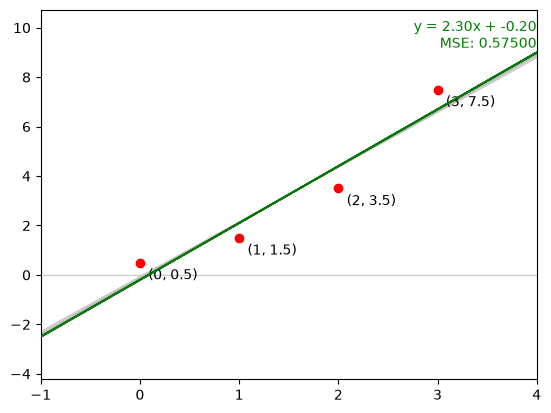
Parabola: NR Multivariate
Formula: $y = ax^2 + bx + c$. Initial guess: $a = 0$, $b = 0$, $c = 0$
MSE: 0.0125. Iterations: 276.
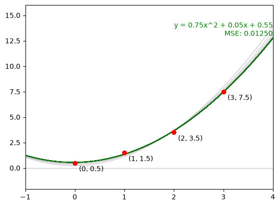
← Back to portfolio